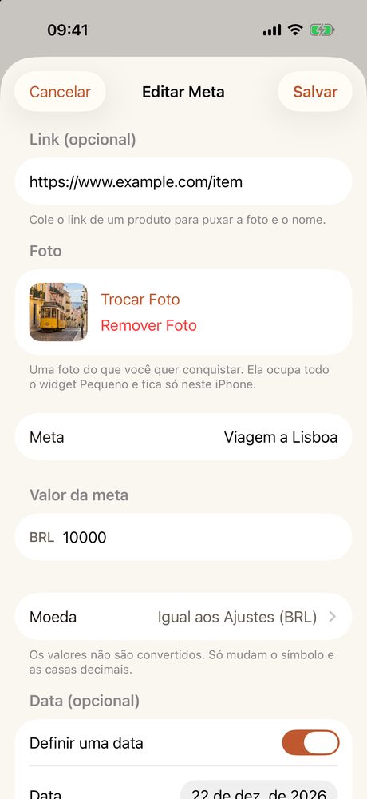

Como colocar uma meta de economia na Tela de Início do iPhone
Juntar dinheiro para algo fica mais fácil quando você vê o objetivo. Um widget coloca a barra — quanto você já guardou e quanto falta — onde você olha muitas vezes por dia, e permite guardar com um toque.
Veja como configurar com o Savebar. Uma meta e o widget pequeno são grátis.
1. Crie uma meta
Abra o Savebar e toque em +.
Digite um nome e o Valor da meta.
Opcional: ative “Definir uma data” para ver os dias que faltam e quanto guardar por dia.
Opcional: cole o link de um produto em “Link”. A foto e o nome são preenchidos a partir da página.
2. Escolha o valor do botão do widget
Em “Valores no widget”, digite o valor que você costuma guardar. O botão do widget adiciona esse valor com um toque, sem abrir o app.

3. Coloque o widget na Tela de Início
Toque e mantenha pressionada uma área vazia da Tela de Início até os apps começarem a tremer.
Toque em Editar (ou +) no canto superior e busque “Savebar”.
Escolha o tamanho Pequeno e toque em Adicionar Widget.
Sempre que guardar dinheiro, toque no botão de valor do widget. A barra e a porcentagem avançam ali mesmo.
O widget maior desta imagem, com várias metas, faz parte do Savebar Pro.
Quer mais?
O Savebar Pro é uma compra única, não uma assinatura:
Metas ilimitadas
Widgets médio e grande com várias metas e até dois botões de valor por meta
Widgets da Tela Bloqueada
Um app para Apple Watch com os mesmos botões de valor
Perguntas
Ele se conecta ao meu banco?Não. Você mesmo registra os valores, então não há login nem nada para vincular.
Quantas metas posso criar de graça?Uma, com o widget pequeno da Tela de Início. O Savebar Pro, uma compra única, oferece metas ilimitadas, widgets médio e grande que mostram várias metas, widgets da Tela Bloqueada e um app para Apple Watch.
Posso guardar um valor que não está no botão?Sim. Abra a meta no app e toque em “+ Guardar” para digitar qualquer valor.
Como escolho qual meta o widget mostra?Toque e mantenha pressionado o widget, toque em “Editar Widget” e escolha a meta.